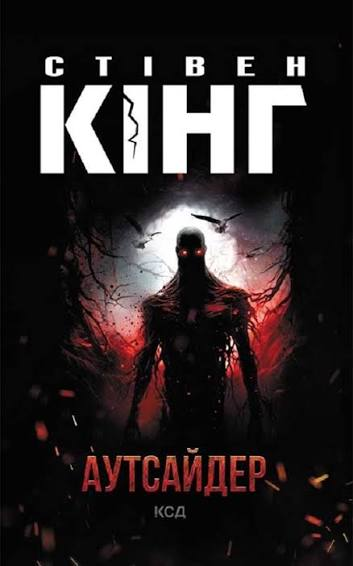

Аутсайдер
Опис
Ти не знаєш, хто ти насправді Тренер молодіжної бейсбольної команди, викладач англійської, чоловік та батько двох доньок. Усе це про Террі. Так, про таких кажуть «класний чувак», з яким усі хочуть дружити і такому не бояться позичити грошей. Так, Террі крутий. А ще — убивця. Це ж він вчинив ту моторошну наругу над нещасним одинадцятирічним хлопчиком? Так, він. Хто б міг подумати, Террі, хто б міг подумати, поліція має усі докази. А Террі — залізобетонне алібі: на момент убийства він перебував в іншому місті. Та як людина може бути у двох місцях одночасно? Що відбувається в містечку? Тут живе дещо жахливе. Те, що, напевно, може набувати людської подоби. Чи те, що нарешті скинуло з себе маску людини та почало свої криваві жнива...